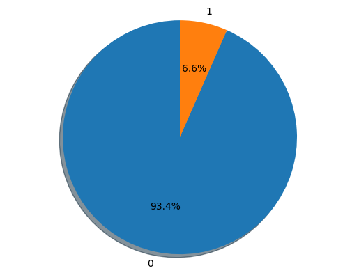

Classification
This notebook presents example usage of package for solving classification problem on seismic-bumps dataset. You can access dataset here.
This tutorial will cover topics such as:
- training model
- changing model hyperparameters
- hyperparameters tuning
- calculating metrics for model
- getting RuleKit inbuilt
Install dependencies
[ ]:
%pip install matplotlib
Summary of the dataset
[2]:
import pandas as pd
from rulekit.arff import read_arff
DATASET_URL: str = (
'https://raw.githubusercontent.com/'
'adaa-polsl/RuleKit/refs/heads/master/data/seismic-bumps/'
'seismic-bumps.arff'
)
df_full: pd.DataFrame = read_arff(DATASET_URL)
df_full['class'] = df_full['class'].astype(int)
df_full.describe()
[2]:
| genergy | gimpuls | goenergy | goimpuls | nbumps | nbumps2 | nbumps3 | nbumps4 | nbumps5 | nbumps6 | nbumps7 | nbumps89 | senergy | maxenergy | class | |
|---|---|---|---|---|---|---|---|---|---|---|---|---|---|---|---|
| count | 2.584000e+03 | 2584.000000 | 2584.000000 | 2584.000000 | 2584.000000 | 2584.000000 | 2584.000000 | 2584.000000 | 2584.000000 | 2584.0 | 2584.0 | 2584.0 | 2584.000000 | 2584.000000 | 2584.000000 |
| mean | 9.024252e+04 | 538.579334 | 12.375774 | 4.508901 | 0.859520 | 0.393576 | 0.392802 | 0.067724 | 0.004644 | 0.0 | 0.0 | 0.0 | 4975.270898 | 4278.850619 | 0.065789 |
| std | 2.292005e+05 | 562.652536 | 80.319051 | 63.166556 | 1.364616 | 0.783772 | 0.769710 | 0.279059 | 0.068001 | 0.0 | 0.0 | 0.0 | 20450.833222 | 19357.454882 | 0.247962 |
| min | 1.000000e+02 | 2.000000 | -96.000000 | -96.000000 | 0.000000 | 0.000000 | 0.000000 | 0.000000 | 0.000000 | 0.0 | 0.0 | 0.0 | 0.000000 | 0.000000 | 0.000000 |
| 25% | 1.166000e+04 | 190.000000 | -37.000000 | -36.000000 | 0.000000 | 0.000000 | 0.000000 | 0.000000 | 0.000000 | 0.0 | 0.0 | 0.0 | 0.000000 | 0.000000 | 0.000000 |
| 50% | 2.548500e+04 | 379.000000 | -6.000000 | -6.000000 | 0.000000 | 0.000000 | 0.000000 | 0.000000 | 0.000000 | 0.0 | 0.0 | 0.0 | 0.000000 | 0.000000 | 0.000000 |
| 75% | 5.283250e+04 | 669.000000 | 38.000000 | 30.250000 | 1.000000 | 1.000000 | 1.000000 | 0.000000 | 0.000000 | 0.0 | 0.0 | 0.0 | 2600.000000 | 2000.000000 | 0.000000 |
| max | 2.595650e+06 | 4518.000000 | 1245.000000 | 838.000000 | 9.000000 | 8.000000 | 7.000000 | 3.000000 | 1.000000 | 0.0 | 0.0 | 0.0 | 402000.000000 | 400000.000000 | 1.000000 |
Decision class distribution
[3]:
import matplotlib.pyplot as plt
groups = df_full['class'].value_counts()
sizes = [groups[0], groups[1]]
labels = [str(e) for e in groups.index]
fig1, ax1 = plt.subplots()
ax1.pie(sizes, labels=labels, autopct='%1.1f%%', shadow=True, startangle=90)
ax1.axis('equal')
plt.show()

Helper function for calculating metrics
[4]:
import math
from sklearn import metrics
import numpy as np
from rulekit.classification import RuleClassifier
X: pd.DataFrame = df_full.drop(['class'], axis=1)
y: pd.Series = df_full['class']
def get_prediction_metrics(
measure: str,
y_pred: np.ndarray,
y_true: pd.Series,
classification_metrics: dict
) -> tuple[pd.DataFrame, np.ndarray]:
confusion_matrix: np.ndarray = metrics.confusion_matrix(y_true, y_pred)
tn, fp, fn, tp = confusion_matrix.ravel()
sensitivity: float = tp / (tp + fn)
specificity: float = tn / (tn + fp)
npv: float = tn / (tn + fn)
ppv: float = tp / (tp + fp)
dictionary = {
'Measure': measure,
'Accuracy': metrics.accuracy_score(y_true, y_pred),
'MAE': metrics.mean_absolute_error(y_true, y_pred),
'Kappa': metrics.cohen_kappa_score(y_true, y_pred),
'Balanced accuracy': metrics.balanced_accuracy_score(y_true, y_pred),
'Logistic loss': metrics.log_loss(y_true, y_pred),
'Precision': metrics.log_loss(y_true, y_pred),
'Sensitivity': sensitivity,
'Specificity': specificity,
'NPV': npv,
'PPV': ppv,
'psep': ppv + npv - 1,
'Fall-out': fp / (fp + tn),
"Youden's J statistic": sensitivity + specificity - 1,
'Lift': (tp / (tp + fp)) / ((tp + fn) / (tp + tn + fp + fn)),
'F-measure': 2 * tp / (2 * tp + fp + fn),
'Fowlkes-Mallows index': metrics.fowlkes_mallows_score(y_true, y_pred),
'False positive': fp,
'False negative': fn,
'True positive': tp,
'True negative': tn,
'Rules per example': classification_metrics['rules_per_example'],
'Voting conflicts': classification_metrics['voting_conflicts'],
'Geometric mean': math.sqrt(specificity * sensitivity),
'Geometric mean': math.sqrt(specificity * sensitivity),
}
return pd.DataFrame.from_records([dictionary], index='Measure'), confusion_matrix
def get_ruleset_stats(
measure: str,
model: RuleClassifier
) -> pd.DataFrame:
return pd.DataFrame.from_records(
[{'Measure': measure, **model.stats.__dict__}],
index='Measure'
)
Rule induction on full dataset
[5]:
from rulekit.classification import RuleClassifier
from rulekit.rules import RuleSet, ClassificationRule
from rulekit.params import Measures
from IPython.display import display
# C2
clf = RuleClassifier(
induction_measure=Measures.C2,
pruning_measure=Measures.C2,
voting_measure=Measures.C2,
)
clf.fit(X, y)
c2_ruleset: RuleSet[ClassificationRule] = clf.model
prediction, classification_metrics = clf.predict(X, return_metrics=True)
prediction_metric, c2_confusion_matrix = get_prediction_metrics('C2', prediction, y, classification_metrics)
model_stats = get_ruleset_stats('C2', clf.model)
# Correlation
clf = RuleClassifier(
induction_measure=Measures.Correlation,
pruning_measure=Measures.Correlation,
voting_measure=Measures.Correlation,
)
clf.fit(X, y)
corr_ruleset: RuleSet[ClassificationRule] = clf.model
prediction, classification_metrics = clf.predict(X, return_metrics=True)
tmp, corr_confusion_matrix = get_prediction_metrics('Correlation', prediction, y, classification_metrics)
prediction_metric = pd.concat([prediction_metric, tmp])
model_stats = pd.concat([model_stats, get_ruleset_stats('Correlation', clf.model)])
# RSS
clf = RuleClassifier(
induction_measure=Measures.RSS,
pruning_measure=Measures.RSS,
voting_measure=Measures.RSS,
)
clf.fit(X, y)
rss_ruleset: RuleSet[ClassificationRule] = clf.model
prediction, classification_metrics = clf.predict(X, return_metrics=True)
tmp, rss_confusion_matrix = get_prediction_metrics('RSS', prediction, y, classification_metrics)
prediction_metric = pd.concat([prediction_metric, tmp])
model_stats = pd.concat([model_stats, get_ruleset_stats('RSS', clf.model)])
display(model_stats)
display(prediction_metric)
print('Confusion matrix - C2')
display(pd.DataFrame(c2_confusion_matrix))
print('Confusion matrix - Correlation')
display(pd.DataFrame(corr_confusion_matrix))
print('Confusion matrix - RSS')
display(pd.DataFrame(rss_confusion_matrix))
| time_total_s | time_growing_s | time_pruning_s | rules_count | conditions_per_rule | induced_conditions_per_rule | avg_rule_coverage | avg_rule_precision | avg_rule_quality | pvalue | FDR_pvalue | FWER_pvalue | fraction_significant | fraction_FDR_significant | fraction_FWER_significant | |
|---|---|---|---|---|---|---|---|---|---|---|---|---|---|---|---|
| Measure | |||||||||||||||
| C2 | 1.218550 | 1.036229 | 0.111458 | 35 | 4.742857 | 22.142857 | 0.259410 | 0.670793 | 0.322125 | 0.005729 | 0.005879 | 0.010640 | 0.971429 | 0.971429 | 0.885714 |
| Correlation | 0.471475 | 0.339709 | 0.123223 | 21 | 5.142857 | 51.666667 | 0.306612 | 0.469157 | 0.201772 | 0.016841 | 0.017345 | 0.026655 | 0.904762 | 0.904762 | 0.857143 |
| RSS | 1.514044 | 1.327209 | 0.171176 | 14 | 3.714286 | 64.428571 | 0.473795 | 0.484564 | 0.253249 | 0.041892 | 0.044068 | 0.068063 | 0.785714 | 0.785714 | 0.714286 |
| Accuracy | MAE | Kappa | Balanced accuracy | Logistic loss | Precision | Sensitivity | Specificity | NPV | PPV | ... | Lift | F-measure | Fowlkes-Mallows index | False positive | False negative | True positive | True negative | Rules per example | Voting conflicts | Geometric mean | |
|---|---|---|---|---|---|---|---|---|---|---|---|---|---|---|---|---|---|---|---|---|---|
| Measure | |||||||||||||||||||||
| C2 | 0.932663 | 0.067337 | 0.433613 | 0.709693 | 2.427088 | 2.427088 | 0.452941 | 0.966446 | 0.961665 | 0.487342 | ... | 7.407595 | 0.469512 | 0.928703 | 81 | 93 | 77 | 2333 | 9.079334 | 2146.0 | 0.661622 |
| Correlation | 0.827399 | 0.172601 | 0.246689 | 0.729909 | 6.221157 | 6.221157 | 0.617647 | 0.842171 | 0.969018 | 0.216049 | ... | 3.283951 | 0.320122 | 0.823757 | 381 | 65 | 105 | 2033 | 6.438854 | 1993.0 | 0.721224 |
| RSS | 0.788313 | 0.211687 | 0.207458 | 0.725394 | 7.629984 | 7.629984 | 0.652941 | 0.797846 | 0.970277 | 0.185309 | ... | 2.816694 | 0.288687 | 0.789800 | 488 | 59 | 111 | 1926 | 6.633127 | 2085.0 | 0.721766 |
3 rows × 23 columns
Confusion matrix - C2
| 0 | 1 | |
|---|---|---|
| 0 | 2333 | 81 |
| 1 | 93 | 77 |
Confusion matrix - Correlation
| 0 | 1 | |
|---|---|---|
| 0 | 2033 | 381 |
| 1 | 65 | 105 |
Confusion matrix - RSS
| 0 | 1 | |
|---|---|---|
| 0 | 1926 | 488 |
| 1 | 59 | 111 |
C2 Measure generated rules
[6]:
for rule in c2_ruleset.rules:
print(rule)
IF gimpuls = (-inf, 32.50) THEN class = {0}
IF nbumps = (-inf, 0.50) AND goenergy = <-84.50, inf) AND goimpuls = (-inf, -0.50) AND genergy = (-inf, 13675) THEN class = {0}
IF genergy = (-inf, 17640) AND nbumps = (-inf, 0.50) AND goenergy = <-84.50, inf) THEN class = {0}
IF genergy = <1625, 17640) AND maxenergy = (-inf, 3500) AND gimpuls = (-inf, 772.50) THEN class = {0}
IF shift = {N} AND nbumps = (-inf, 0.50) AND goenergy = <-73.50, inf) THEN class = {0}
IF shift = {N} AND senergy = (-inf, 6150) AND genergy = <1865, inf) AND goimpuls = (-inf, 230.50) THEN class = {0}
IF senergy = (-inf, 550) AND gimpuls = (-inf, 380.50) AND goimpuls = (-inf, 96.50) AND goenergy = (-inf, 118) THEN class = {0}
IF senergy = (-inf, 550) AND genergy = (-inf, 31790) AND goenergy = <-84.50, 114.50) THEN class = {0}
IF senergy = (-inf, 550) AND goenergy = <-84.50, 87.50) AND gimpuls = (-inf, 1342.50) AND goimpuls = (-inf, 96) THEN class = {0}
IF senergy = (-inf, 550) AND goimpuls = (-inf, 233.50) THEN class = {0}
IF genergy = <1865, 28515) AND goenergy = (-inf, 105.50) AND nbumps = (-inf, 4.50) THEN class = {0}
IF nbumps = <0.50, 1.50) AND gimpuls = (-inf, 1210) AND goimpuls = (-inf, 233.50) AND goenergy = <-72.50, inf) AND genergy = <12550, inf) THEN class = {0}
IF gimpuls = (-inf, 514.50) AND nbumps = (-inf, 6.50) AND goimpuls = (-inf, 96.50) AND goenergy = <-84.50, inf) THEN class = {0}
IF nbumps = (-inf, 2.50) AND gimpuls = (-inf, 1832.50) AND goimpuls = (-inf, 312) THEN class = {0}
IF nbumps3 = (-inf, 2.50) AND nbumps = (-inf, 6.50) AND goenergy = <-88.50, inf) THEN class = {0}
IF genergy = (-inf, 748755) AND goimpuls = (-inf, 95.50) AND maxenergy = (-inf, 55000) AND gimpuls = (-inf, 3096) THEN class = {0}
IF nbumps3 = <3.50, inf) AND gimpuls = <364, 1459.50) AND senergy = <10150, inf) THEN class = {1}
IF gimpuls = <2208.50, inf) AND genergy = <513615, 1005720) AND nbumps2 = <0.50, inf) AND nbumps = (-inf, 3.50) THEN class = {1}
IF gimpuls = <1328, inf) AND goenergy = (-inf, -29.50) AND goimpuls = <-31.50, -14.50) AND nbumps4 = (-inf, 1.50) THEN class = {1}
IF gimpuls = <1328, 2109) AND goimpuls = (-inf, -5.50) AND senergy = <350, 36350) AND genergy = <159155, 586025) AND nbumps2 = (-inf, 3.50) AND goenergy = <-41.50, inf) THEN class = {1}
IF nbumps3 = <0.50, 1.50) AND gimpuls = <1408, 1959) AND goimpuls = <-20.50, 13.50) AND senergy = (-inf, 54950) THEN class = {1}
IF senergy = <750, 38250) AND genergy = <254130, 1133675) AND goenergy = <-16.50, inf) AND gimpuls = <1438.50, inf) AND goimpuls = <-5, inf) THEN class = {1}
IF nbumps = <4.50, inf) AND nbumps3 = <1.50, 4.50) AND gimpuls = <203.50, inf) AND senergy = <4300, 131700) AND goenergy = <-41.50, inf) THEN class = {1}
IF nbumps = <2.50, 4.50) AND gimpuls = <740.50, inf) AND genergy = <38935, 127440) AND senergy = (-inf, 14750) AND goimpuls = (-inf, 68.50) THEN class = {1}
IF nbumps = <2.50, inf) AND gimpuls = <379, 1742) AND senergy = (-inf, 31100) AND genergy = (-inf, 211170) AND goenergy = (-inf, 123.50) AND goimpuls = (-inf, 19.50) THEN class = {1}
IF gimpuls = <1139.50, inf) AND goimpuls = <-46, 116.50) AND senergy = (-inf, 38250) AND genergy = <46580, 1877915) AND goenergy = (-inf, 183) AND shift = {W} AND nbumps3 = (-inf, 1.50) AND nbumps2 = (-inf, 2.50) THEN class = {1}
IF nbumps = <1.50, 3.50) AND gimpuls = <521.50, 2344.50) AND nbumps2 = <0.50, inf) AND genergy = <34605, 656965) AND goenergy = (-inf, 137) AND goimpuls = <-39, 41.50) AND maxenergy = <450, inf) THEN class = {1}
IF nbumps = <1.50, 3.50) AND nbumps2 = <0.50, inf) AND genergy = <18870, inf) AND nbumps3 = (-inf, 1.50) AND gimpuls = <160, inf) AND senergy = <550, inf) AND goimpuls = <-62.50, 8.50) AND goenergy = (-inf, -1.50) THEN class = {1}
IF nbumps = <1.50, inf) AND gimpuls = <95, 1603.50) AND goenergy = (-inf, 131) AND goimpuls = <-70.50, 119) AND nbumps2 = (-inf, 4.50) AND nbumps3 = <0.50, inf) AND genergy = (-inf, 614380) AND maxenergy = (-inf, 25000) AND senergy = <2250, inf) THEN class = {1}
IF goenergy = <-59.50, 186) AND genergy = <12415, 129940) AND gimpuls = <121.50, 793) AND senergy = <150, 1350) AND ghazard = {a} AND goimpuls = <-53.50, inf) THEN class = {1}
IF genergy = <42215, 94300) AND gimpuls = <133.50, 813.50) AND ghazard = {a} AND goenergy = <-74.50, 160) AND senergy = (-inf, 11100) AND nbumps = (-inf, 3.50) AND nbumps3 = (-inf, 0.50) THEN class = {1}
IF gimpuls = <537.50, 796) AND shift = {W} AND genergy = <17635, 36470) AND goimpuls = <-36.50, inf) AND goenergy = <-37.50, inf) AND nbumps = (-inf, 0.50) THEN class = {1}
IF genergy = <18800, 52205) AND shift = {W} AND ghazard = {a} AND goimpuls = <-28.50, inf) AND goenergy = (-inf, 181) AND gimpuls = <380.50, 524.50) AND nbumps = (-inf, 0.50) THEN class = {1}
IF gimpuls = <184.50, inf) AND goenergy = <-55.50, 128.50) AND genergy = <7265, inf) AND goimpuls = <-60.50, 37.50) AND nbumps = (-inf, 7.50) AND nbumps2 = (-inf, 4.50) AND maxenergy = (-inf, 25000) AND senergy = (-inf, 31350) THEN class = {1}
IF gimpuls = <32.50, inf) AND goimpuls = <-74.50, inf) AND ghazard = {a} AND genergy = <1510, inf) AND goenergy = <-89.50, 124.50) THEN class = {1}
Correlation Measure generated rules
[7]:
for rule in corr_ruleset.rules:
print(rule)
IF nbumps = (-inf, 1.50) AND gimpuls = (-inf, 1252.50) THEN class = {0}
IF nbumps = (-inf, 2.50) AND gimpuls = (-inf, 1331) AND goimpuls = (-inf, 312) AND nbumps5 = (-inf, 0.50) THEN class = {0}
IF nbumps = (-inf, 2.50) THEN class = {0}
IF gimpuls = (-inf, 1253.50) AND nbumps3 = (-inf, 2.50) AND nbumps = (-inf, 7) THEN class = {0}
IF nbumps4 = (-inf, 2.50) THEN class = {0}
IF nbumps2 = <0.50, 2.50) AND maxenergy = <1500, inf) AND senergy = (-inf, 36050) AND nbumps3 = <0.50, 4.50) AND goimpuls = <-34, 95) AND genergy = (-inf, 662435) AND gimpuls = <994.50, 1959) THEN class = {1}
IF nbumps2 = <0.50, inf) AND maxenergy = <1500, inf) AND goimpuls = <-55, 95) AND nbumps = (-inf, 6.50) AND genergy = <61250, 662435) AND goenergy = (-inf, 96) AND nbumps3 = <0.50, inf) AND gimpuls = <712, 2257.50) AND senergy = (-inf, 31100) THEN class = {1}
IF nbumps2 = <0.50, inf) AND genergy = <58310, 934630) AND goenergy = (-inf, 186) AND senergy = (-inf, 40650) AND maxenergy = <1500, inf) AND gimpuls = <538.50, inf) AND goimpuls = <-55, inf) THEN class = {1}
IF nbumps = <1.50, inf) AND nbumps2 = <0.50, inf) AND gimpuls = <521.50, 2374) AND genergy = <58310, 799855) AND senergy = <650, 36050) AND goimpuls = <-71, 58.50) AND ghazard = {a} THEN class = {1}
IF nbumps = <1.50, 6.50) AND nbumps2 = <0.50, inf) AND gimpuls = <521.50, 2374) AND genergy = <34360, inf) AND maxenergy = <350, inf) AND goimpuls = <-55, 95) AND senergy = <550, inf) AND nbumps4 = (-inf, 1.50) THEN class = {1}
IF nbumps = <1.50, inf) AND gimpuls = <306, inf) AND genergy = <28325, inf) AND goimpuls = (-inf, 19.50) THEN class = {1}
IF nbumps = <1.50, inf) AND nbumps2 = <0.50, inf) AND gimpuls = <153.50, 321) AND genergy = <14295, 36250) AND goimpuls = <-60.50, inf) AND senergy = (-inf, 40500) AND nbumps3 = (-inf, 3.50) THEN class = {1}
IF genergy = <96260, 1062020) AND goimpuls = <-29, inf) AND senergy = <850, 7500) AND nbumps3 = (-inf, 1.50) AND gimpuls = <1404, 2965.50) AND nbumps = (-inf, 3.50) AND goenergy = (-inf, 69.50) THEN class = {1}
IF gimpuls = <1253.50, inf) AND goenergy = <-50.50, 131.50) AND genergy = <46580, 1789250) AND nbumps = (-inf, 7.50) AND shift = {W} AND goimpuls = <-60.50, 118) AND senergy = (-inf, 95850) AND ghazard = {a} THEN class = {1}
IF senergy = <550, inf) AND shift = {W} AND genergy = <10495, inf) AND gimpuls = <160, inf) AND goenergy = (-inf, 126) THEN class = {1}
IF senergy = <350, inf) AND goimpuls = <-74.50, inf) AND gimpuls = <32.50, inf) AND goenergy = <-78.50, inf) AND maxenergy = <250, inf) THEN class = {1}
IF genergy = <43150, inf) AND gimpuls = <133.50, inf) AND goenergy = (-inf, 176.50) THEN class = {1}
IF shift = {W} AND genergy = <31760, 49585) AND gimpuls = <362.50, 771) AND goimpuls = <-27.50, inf) AND goenergy = <-3.50, inf) AND maxenergy = (-inf, 650) THEN class = {1}
IF shift = {W} AND genergy = <20485, 43280) AND gimpuls = <380.50, 796) AND goimpuls = <-37, 142.50) AND goenergy = <-37.50, 181) AND nbumps = (-inf, 0.50) THEN class = {1}
IF gimpuls = <177.50, inf) AND genergy = <7265, inf) AND goimpuls = (-inf, 241.50) AND goenergy = (-inf, 124.50) THEN class = {1}
IF gimpuls = <54.50, 90) AND genergy = <1510, 4905) AND goimpuls = <-72.50, 28.50) AND seismoacoustic = {a} THEN class = {1}
RSS Measure generated rules
[8]:
for rule in rss_ruleset.rules:
print(rule)
IF nbumps = (-inf, 1.50) AND genergy = (-inf, 126350) THEN class = {0}
IF nbumps = (-inf, 1.50) AND gimpuls = (-inf, 2168) AND goimpuls = (-inf, 96.50) THEN class = {0}
IF genergy = (-inf, 44750) AND nbumps3 = (-inf, 2.50) AND goenergy = (-inf, 105.50) THEN class = {0}
IF gimpuls = (-inf, 725.50) AND nbumps3 = (-inf, 3.50) AND nbumps4 = (-inf, 2.50) AND goimpuls = (-inf, 117) AND goenergy = <-88.50, inf) THEN class = {0}
IF nbumps2 = (-inf, 1.50) AND nbumps = (-inf, 4.50) THEN class = {0}
IF goimpuls = (-inf, 312) AND nbumps5 = (-inf, 0.50) AND goenergy = <-88.50, inf) THEN class = {0}
IF gimpuls = <521.50, inf) AND genergy = <57680, inf) THEN class = {1}
IF nbumps = <1.50, inf) THEN class = {1}
IF senergy = <550, inf) AND shift = {W} AND genergy = <10495, inf) THEN class = {1}
IF nbumps = <0.50, inf) AND goimpuls = <-74.50, inf) AND gimpuls = <32.50, inf) AND goenergy = <-78.50, 124.50) THEN class = {1}
IF genergy = <34315, 49585) AND ghazard = {a} AND gimpuls = <396, 1445.50) AND goenergy = <7, inf) AND goimpuls = <-19, inf) AND senergy = (-inf, 350) THEN class = {1}
IF genergy = <26200, 78890) AND gimpuls = <133.50, 813.50) AND goenergy = <-74.50, 297.50) AND goimpuls = <-71, inf) AND nbumps = (-inf, 3.50) AND senergy = (-inf, 1850) THEN class = {1}
IF genergy = <18585, 25305) AND shift = {W} AND gimpuls = <240, 588.50) AND goimpuls = <-42.50, 133) AND goenergy = <-45.50, inf) AND senergy = (-inf, 450) THEN class = {1}
IF gimpuls = <54.50, inf) AND goimpuls = <-74.50, 28.50) AND genergy = <1510, inf) AND ghazard = {a} AND nbumps4 = (-inf, 1.50) AND senergy = (-inf, 92850) THEN class = {1}
Stratified K-Folds cross-validation
[9]:
from IPython.display import display
from sklearn.model_selection import StratifiedKFold
N_SPLITS: int = 10
skf = StratifiedKFold(n_splits=10)
[10]:
c2_ruleset_stats = pd.DataFrame()
c2_prediction_metrics = pd.DataFrame()
c2_confusion_matrix = np.array([[0.0, 0.0], [0.0, 0.0]])
for train_index, test_index in skf.split(X, y):
x_train, x_test = X.iloc[train_index], X.iloc[test_index]
y_train, y_test = y.iloc[train_index], y.iloc[test_index]
clf = RuleClassifier(
induction_measure=Measures.C2,
pruning_measure=Measures.C2,
voting_measure=Measures.C2,
)
clf.fit(x_train, y_train)
c2_ruleset = clf.model
prediction, classification_metrics = clf.predict(x_test, return_metrics=True)
tmp, confusion_matrix = get_prediction_metrics('C2', prediction, y_test, classification_metrics)
c2_prediction_metrics = pd.concat([c2_prediction_metrics, tmp])
c2_ruleset_stats = pd.concat([c2_ruleset_stats, get_ruleset_stats('C2', c2_ruleset)])
c2_confusion_matrix += confusion_matrix
c2_confusion_matrix /= N_SPLITS
C:\Users\cezar\AppData\Local\Temp\ipykernel_13196\4002598548.py:22: RuntimeWarning: invalid value encountered in scalar divide
ppv: float = tp / (tp + fp)
C:\Users\cezar\AppData\Local\Temp\ipykernel_13196\4002598548.py:39: RuntimeWarning: invalid value encountered in scalar divide
'Lift': (tp / (tp + fp)) / ((tp + fn) / (tp + tn + fp + fn)),
C:\Users\cezar\AppData\Local\Temp\ipykernel_13196\4002598548.py:22: RuntimeWarning: invalid value encountered in scalar divide
ppv: float = tp / (tp + fp)
C:\Users\cezar\AppData\Local\Temp\ipykernel_13196\4002598548.py:39: RuntimeWarning: invalid value encountered in scalar divide
'Lift': (tp / (tp + fp)) / ((tp + fn) / (tp + tn + fp + fn)),
Rules characteristics
[11]:
display(c2_ruleset_stats.mean())
time_total_s 0.292132
time_growing_s 0.227262
time_pruning_s 0.047455
rules_count 34.200000
conditions_per_rule 4.720378
induced_conditions_per_rule 21.124536
avg_rule_coverage 0.239541
avg_rule_precision 0.690010
avg_rule_quality 0.337021
pvalue 0.014757
FDR_pvalue 0.015234
FWER_pvalue 0.030014
fraction_significant 0.909792
fraction_FDR_significant 0.909792
fraction_FWER_significant 0.872710
dtype: float64
Rules evaluation (average)
[12]:
display(c2_prediction_metrics.mean())
Accuracy 0.855063
MAE 0.144937
Kappa 0.107556
Balanced accuracy 0.567020
Logistic loss 5.224070
Precision 5.224070
Sensitivity 0.235294
Specificity 0.898747
NPV 0.945594
PPV 0.495355
psep 0.443788
Fall-out 0.101253
Youden's J statistic 0.134041
Lift 7.520255
F-measure 0.145015
Fowlkes-Mallows index 0.870605
False positive 24.500000
False negative 13.000000
True positive 4.000000
True negative 216.900000
Rules per example 7.871479
Voting conflicts 179.000000
Geometric mean 0.344832
dtype: float64
Confusion matrix (average)
[13]:
display(pd.DataFrame(c2_confusion_matrix))
| 0 | 1 | |
|---|---|---|
| 0 | 216.9 | 24.5 |
| 1 | 13.0 | 4.0 |
Hyperparameters tuning
This one gonna take a while…
[18]:
from sklearn.model_selection import StratifiedKFold
from sklearn.model_selection import GridSearchCV
from rulekit.params import Measures
N_SPLITS: int = 3
# define models and parameters
model = RuleClassifier()
minsupp_new = range(3, 15, 2)
measures_choice = [Measures.C2, Measures.RSS, Measures.WeightedLaplace, Measures.Correlation]
# define grid search
grid = {
'minsupp_new': minsupp_new,
'induction_measure': measures_choice,
'pruning_measure': measures_choice,
'voting_measure': measures_choice
}
cv = StratifiedKFold(n_splits=N_SPLITS)
grid_search = GridSearchCV(
estimator=model,
param_grid=grid,
cv=cv,
scoring='balanced_accuracy',
n_jobs=3
)
grid_result = grid_search.fit(X, y)
# summarize results
print("Best BAC: %f using %s" % (grid_result.best_score_, grid_result.best_params_))
Best BAC: 0.626780 using {'induction_measure': <Measures.WeightedLaplace: 'WeightedLaplace'>, 'minsupp_new': 5, 'pruning_measure': <Measures.RSS: 'RSS'>, 'voting_measure': <Measures.WeightedLaplace: 'WeightedLaplace'>}
Building model with tuned hyperparameters
Split dataset to train and test (80%/20%).
[20]:
import numpy as np
import pandas as pd
from sklearn.model_selection import train_test_split
from IPython.display import display
X_train, X_test, y_train, y_test = train_test_split(X, y, test_size=0.2, shuffle=True)
clf = RuleClassifier(**grid_result.best_params_)
clf.fit(X_train, y_train)
ruleset: RuleSet[ClassificationRule] = clf.model
ruleset_stats = get_ruleset_stats('Best', ruleset)
Rules evaluation
[21]:
display(ruleset_stats.mean())
time_total_s 0.173054
time_growing_s 0.120460
time_pruning_s 0.029986
rules_count 29.000000
conditions_per_rule 2.689655
induced_conditions_per_rule 15.310345
avg_rule_coverage 0.491183
avg_rule_precision 0.736226
avg_rule_quality 1.309334
pvalue 0.019831
FDR_pvalue 0.019993
FWER_pvalue 0.024284
fraction_significant 0.931034
fraction_FDR_significant 0.931034
fraction_FWER_significant 0.931034
dtype: float64
Validate model on test dataset
[22]:
prediction, classification_metrics = clf.predict(X_test, return_metrics=True)
prediction_metrics, confusion_matrix = get_prediction_metrics('Best', prediction, y_test, classification_metrics)
display(prediction_metrics.mean())
display(pd.DataFrame(confusion_matrix))
Accuracy 0.808511
MAE 0.191489
Kappa 0.170010
Balanced accuracy 0.679398
Logistic loss 6.901976
Precision 6.901976
Sensitivity 0.533333
Specificity 0.825462
NPV 0.966346
PPV 0.158416
psep 0.124762
Fall-out 0.174538
Youden's J statistic 0.358795
Lift 2.730033
F-measure 0.244275
Fowlkes-Mallows index 0.809997
False positive 85.000000
False negative 14.000000
True positive 16.000000
True negative 402.000000
Rules per example 14.034816
Voting conflicts 360.000000
Geometric mean 0.663511
dtype: float64
| 0 | 1 | |
|---|---|---|
| 0 | 402 | 85 |
| 1 | 14 | 16 |